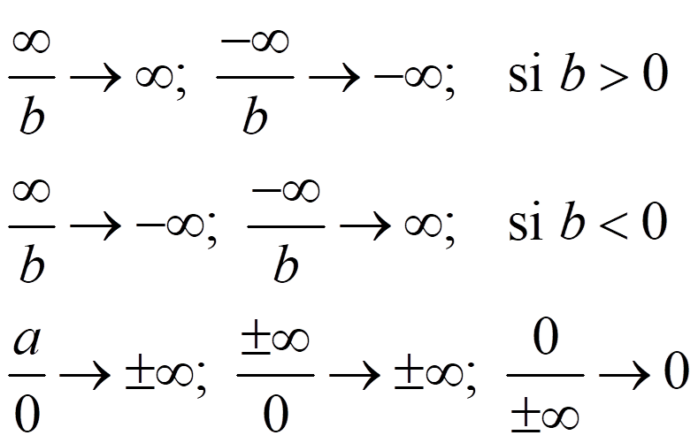
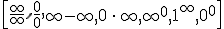
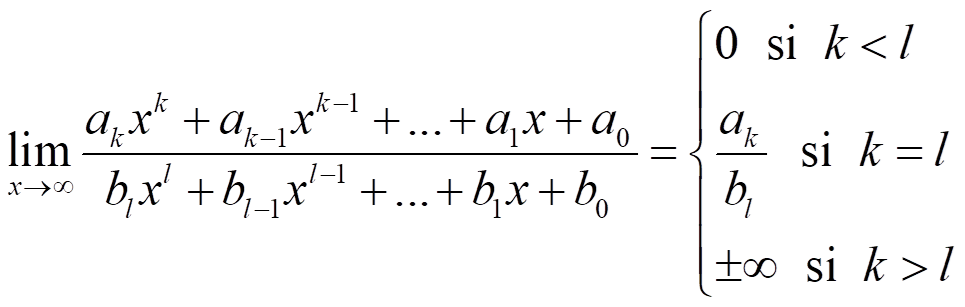
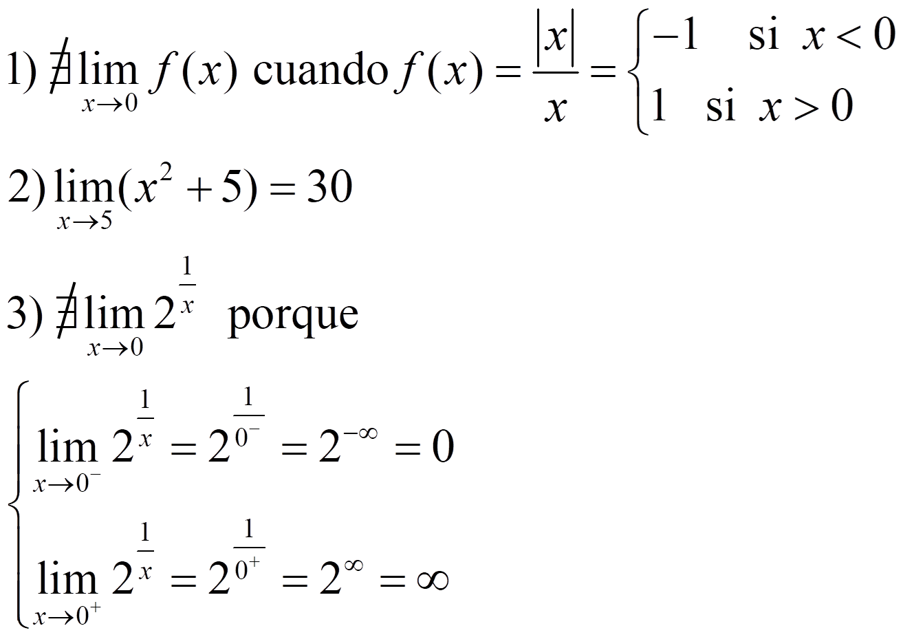

Ejemplos:
NOTA. Recuerda que:

En límites infinitos con funciones polinómicas, el límite es siempre ±∞ dependiendo del signo del coeficiente del término de mayor grado:
Las indeterminaciones son límites diferentes en cada situación. Son:

Los límites infinitos con funciones racionales son siempre indeterminaciones, que resolvemos dividiendo por x elevado al mayor grado
Al final::

Si tenemos funciones irracionales:
Encontramos indeterminaciones si restamos dos funciones con raíces, entonces debemos multiplicar y dividir por el conjugado
Si a es -∞, hacemos el cambio:
Por ejemplo:
Cuando a no es infinito, podemos encontrar otras indeterminaciones:
Otros ejemplos

Si el límite tiene potencias, recuerda la propiedad:
Ejemplos:
El número e es el límite:
que se usa en las indeterminaciones del tipo 1∞
Ejemplo:
Ejercicio. Calcula:
Soluciones: a) 0; b) 1/2; c) 0; d) 1; e) -∞